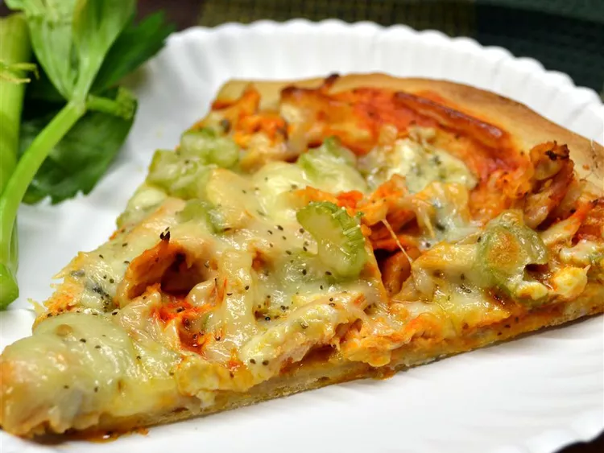

Touch Down Pizza

Description
Do you want to be American ! Go for this tastiful recipe you won't regret it ! It's full of cheese and above all love
Ingredients
- 1 (14 ounce) package prebaked pizza crust (such as Boboli®)
- 1 cup diced cooked chicken breast
- 3 tablespoons Buffalo wing sauce
- 1 cup shredded mozzarella cheese
- 1 (4 ounce) package crumbled blue cheese
- ½ cup Buffalo wing sauce
Steps
- Preheat oven to 475 degrees F (245 degrees C). Line a baking sheet with aluminum foil.
- Place pizza crust on the prepared baking sheet.
- Mix chicken and 3 tablespoons wing sauce together in a bowl until evenly coated.
- Spread 1/2 cup wing sauce on the pizza crust; top with blue cheese, chicken mixture, and celery. Cover pizza with mozzarella cheese.
- Bake in the preheated oven until pizza is cooked through and cheese is bubbling, about 12 minutes. Cool pizza about 5 minutes before cutting into squares.
Go back to the main page